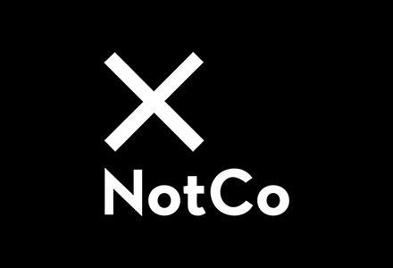
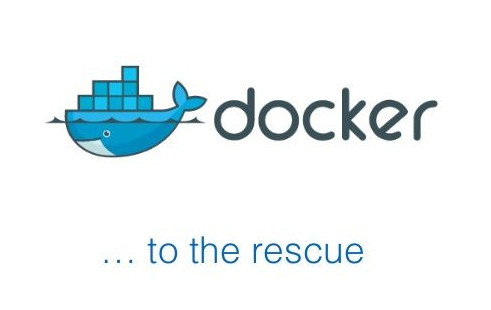

Continuous Integration & Continuous Delivery in practice
Rodrigo Amaro
30/06/2021
Hello!
Soy Rodrigo Amaro
Soy sansano! Entré a Telemática el 2005
Llevo un par de años trabajando en programación
Y ahora trabajo en Mercado Libre como Technical Lead
Continuous Integration ??
A little of history...
.. a long long time ago
Alice era una desarrolladora en el 2010, y trabajaba en una empresa donde trabajan pocos desarroladores
Primer proyecto: Modificar un sitio web para un diario conocido

Tecnologías de punta

Problemas? Ninguno!
¿Y si queremos que otras personas trabajen con nosotros?
¿Y si queremos desarrollar nuestros cambios por separado?
¿Y como podemos guardar el sitio que antes funcionaba?
¿Y si no nos acordabamos los archivos que modificamos?
¿Y si mi cambio requiere una modificación en la plataforma?
Y como lo hacen ellos?
Historia basada en hechos reales...
Continuous Integration
“... a software development practice where members of a team integrate their work frequently, usually each person integrates at least daily — leading to multiple integrations per day. Each integration is verified by an automated build (including test) to detect integration errors as quickly as possible.”
— Martin Fowler
Version Control Repository


CI Servers & tools

An overview

Don´t commit broken code

Commit code frequently

Run private builds

Write automated developer tests


Fix broken builds immediately

All tests and inspections must pass

Composición de un Pipeline CI
Building software
Example: React App
package.json
{
"name": "my-app",
"version": "0.1.0",
"private": true,
"dependencies": {
"@testing-library/jest-dom": "^5.14.1",
"@testing-library/react": "^11.2.7",
"@testing-library/user-event": "^12.8.3",
"react": "^17.0.2",
"react-dom": "^17.0.2",
"react-scripts": "4.0.3",
"web-vitals": "^1.1.2"
},
"scripts": {
"start": "react-scripts start",
"build": "react-scripts build --stats",
"test": "react-scripts test",
"eject": "react-scripts eject"
},
"eslintConfig": {
"extends": [
"react-app",
"react-app/jest"
]
},
"browserslist": {
"production": [
">0.2%",
"not dead",
"not op_mini all"
],
"development": [
"last 1 chrome version",
"last 1 firefox version",
"last 1 safari version"
]
}
}
building the app
npm install
npm run build
Pero nuestro ambiente necesita NodeJS!

building the app with docker
FROM node:14-alpine
RUN mkdir /app
WORKDIR /app
COPY . /app/
RUN npm install
RUN npm run build
docker build -t react-app .
Testing software
testing the app
npm run test
npm run e2e
Run validations
EsLint
module.exports = {
env: {
browser: true,
es2021: true,
jest: true
},
extends: [
'plugin:react/recommended',
'airbnb',
],
parserOptions: {
ecmaFeatures: {
jsx: true,
},
ecmaVersion: 12,
sourceType: 'module',
},
plugins: [
'react',
],
rules: {
"react/jsx-filename-extension": [1, { "extensions": [".js", ".jsx"] }],
}
};
npm run lint
Generating the artifact
Using docker
FROM nginx:1.15
COPY /app/build/ /usr/share/nginx/html
COPY /nginx.conf /etc/nginx/conf.d/default.conf
docker build -t react-app .
docker tag react-app mycompany/react-app-demo:0.0.1
docker push
Valor de CI
Reduce risk
Reduce repetitive manual processes
Generate deployable software at any time and at any place
Enable better project visibility
Establish greater confidence in the software product from the development team
Continuous integration vs. continuous delivery vs. continuous deployment
Continuous integration
Integrar tu codigo continuamente
Continuous delivery
Integrar tu codigo continuamente y además generar artefactos que pueden ser deployados en cualquier momento
Continuous delivery
Integrar tu codigo continuamente y además generar artefactos que pueden ser deployados en cualquier momento de manera automática

https://www.atlassian.com/continuous-delivery/principles/continuous-integration-vs-delivery-vs-deployment
Release process